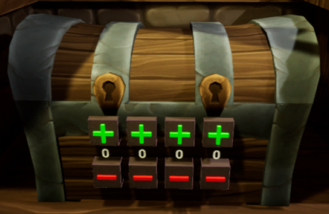
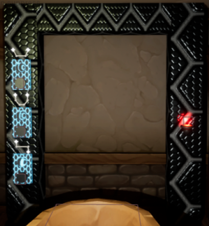

Portal' Venture

Portal' Venture est une escape game VR dans laquel les joueurs doivent trouver comment ouvrir un portail en lisant les notes d'un chercheur qui aurait disparu. C'est un jeu de type "the void" donc un jeu où les joueurs se baladent en se déplaçant dans la pièce, cela permet d'amélioré l'immersion du jeu en évitant la VR sickness. En plus, le jeu a été conçu pour fonctionner sur l'Oculus Quest 2 afin de ne pas être dérangé par un câble.
Contexte
Ce projet a vu le jour afin de valider mon année de cycle 2 à Ludus Académie 2021-2022 dans l'objectif d'obtenir mon titre de "Développeur de jeux vidéo". Il a débuté fin novembre 2021 et c'est terminé en mai 2022. Ce projet est le résultat de mon premier pas sur les moteurs de jeu consécants tels que Unreal Engine 4, je souhaitais me dépasser et me lancer un défis. Étant passioné par les nouvelles technologies, la réalité Virtuel faisait partie des outils avec lequel je voulais travailler. De là m'est venu l'idée de concevoir une escape game en VR.
Enigmes

On peut y retrouver 3 énigmes.
La première énigme est un chaudron dans lequel il faut y plonger des ingrédients pour trouver le bon mélange. A chaque fois qu'on y ajoute un ingrédient, le niveau d'eau monte et lorsqu'il y a 3 ingrédients, le liquide change de couleur pour indiquer si 0,1,2 ou les 3 ingrédients sont correctes. Les joueurs doivent alors tester plusieurs combinaisons pour trouver la bonne formule.
La deuxième énigme est un coffre avec un code à 4 chiffres. Au-dessus du coffre se trouve un tableau dans lequel on peut trouver 4 chiffres imbriquées les uns dans les autres. En entrant les bons chiffres, le coffre se dévérouille et on peut l'ouvrir pour y trouver plus d'ingrédients pour l'énigme 1.
Après avoir réussi à produire le mélange nécessaire pour donner de l'énergie au portail, la troisème énigme consite à entrer la bonne combinaison de couleur pour réussir à l'allumer. Au-dessus de chaque bouton se trouve un dessin qui forme une constellation. En regardant par la fenêtre, on peut observer des étoiles dans le ciel dont certaines sont de couleur. En retrouvant les constéllations et les couleurs liés à celle-ci, on peut ouvrir le portail.
Conclusion
Le jeu avait réussi à créer une réel immersion des joueurs, à l'aide de la fonctionnalités "the void" et le fait de ne pas être embêté par des cables, certains joueurs n'osaient pas marcher sur des objets ou faisait le tour du chaudron pour ne pas passer au travers. Malgré le fait qu'il était possible de prendre des objets dans le coffre même si celui-ci était fermé, cette idée n'était pas venu à l'esprit des joueurs et ils ont pu passé une bonne expérience. Le projet a été très bénéfique pour moi, j'ai appris énormémement de chose au développement à l'aide de ce jeu et celui-ci m'avait motivés à développer beaucoup d'autres projets.